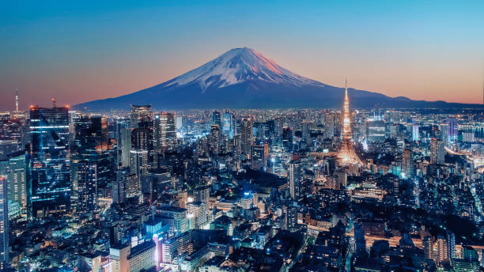

Tokyo is the capital and largest city of Japan. It is one of the most vibrant and exciting cities in the world. Tokyo is a perfect blend of ancient tradition and cutting-edge modernity, where ancient temples stand next to futuristic skyscrapers.
The city is known for its incredible food scene, advanced technology, beautiful gardens, and unique culture. From the bustling streets of Shibuya to the serene temples of Asakusa, Tokyo offers something for everyone. It is home to millions of people from around the world and attracts millions of visitors each year.
